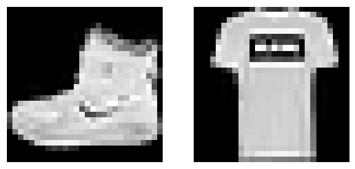
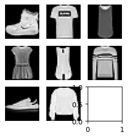
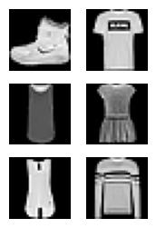
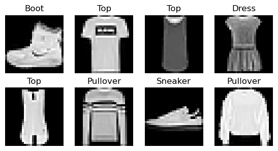

import loggingcore
Fill in a module description here
Hugging Face Datasets
logging.disable(logging.WARNING)from datasets import load_dataset_buildername = 'fashion_mnist'
ds_builder = load_dataset_builder(name); print(ds_builder.info.description)dir(ds_builder.info)['_INCLUDED_INFO_IN_YAML',
'__annotations__',
'__class__',
'__dataclass_fields__',
'__dataclass_params__',
'__delattr__',
'__dict__',
'__dir__',
'__doc__',
'__eq__',
'__format__',
'__ge__',
'__getattribute__',
'__getstate__',
'__gt__',
'__hash__',
'__init__',
'__init_subclass__',
'__le__',
'__lt__',
'__match_args__',
'__module__',
'__ne__',
'__new__',
'__post_init__',
'__reduce__',
'__reduce_ex__',
'__repr__',
'__setattr__',
'__sizeof__',
'__str__',
'__subclasshook__',
'__weakref__',
'_dump_info',
'_dump_license',
'_from_yaml_dict',
'_to_yaml_dict',
'builder_name',
'citation',
'config_name',
'copy',
'dataset_name',
'dataset_size',
'description',
'download_checksums',
'download_size',
'features',
'from_dict',
'from_directory',
'from_merge',
'homepage',
'license',
'post_processed',
'post_processing_size',
'size_in_bytes',
'splits',
'supervised_keys',
'task_templates',
'update',
'version',
'write_to_directory']ds_builder.info.splits{'train': SplitInfo(name='train', num_bytes=31304707, num_examples=60000, shard_lengths=None, dataset_name='fashion_mnist'),
'test': SplitInfo(name='test', num_bytes=5235160, num_examples=10000, shard_lengths=None, dataset_name='fashion_mnist')}ds_builder.info.features{'image': Image(mode=None, decode=True, id=None),
'label': ClassLabel(names=['T - shirt / top', 'Trouser', 'Pullover', 'Dress', 'Coat', 'Sandal', 'Shirt', 'Sneaker', 'Bag', 'Ankle boot'], id=None)}from datasets import load_datasetDatasetDict({
train: Dataset({
features: ['image', 'label'],
num_rows: 60000
})
test: Dataset({
features: ['image', 'label'],
num_rows: 10000
})
})dsd = load_dataset(name); dsdtrn,tst= dsd['train'],dsd['test']; trn[0]{'image': <PIL.PngImagePlugin.PngImageFile image mode=L size=28x28>,
'label': 9}x,y = ds_builder.info.features; x,y('image', 'label')trnDataset({
features: ['image', 'label'],
num_rows: 60000
})img = trn[0][x]; img
xb,yb = trn[:5][x],trn[:5][y]; yb[9, 0, 0, 3, 0]trn.features{'image': Image(mode=None, decode=True, id=None),
'label': ClassLabel(names=['T - shirt / top', 'Trouser', 'Pullover', 'Dress', 'Coat', 'Sandal', 'Shirt', 'Sneaker', 'Bag', 'Ankle boot'], id=None)}featy = trn.features[y]; featyClassLabel(names=['T - shirt / top', 'Trouser', 'Pullover', 'Dress', 'Coat', 'Sandal', 'Shirt', 'Sneaker', 'Bag', 'Ankle boot'], id=None)?featy.int2strSignature: featy.int2str(values: Union[int, collections.abc.Iterable]) -> Union[str, collections.abc.Iterable]
Docstring:
Conversion `integer` => class name `string`.
Regarding unknown/missing labels: passing negative integers raises `ValueError`.
Example:
```py
>>> from datasets import load_dataset
>>> ds = load_dataset("rotten_tomatoes", split="train")
>>> ds.features["label"].int2str(0)
'neg'
```
File: ~/miniforge3/envs/default/lib/python3.11/site-packages/datasets/features/features.py
Type: methodfeaty.int2str(yb), yb(['Ankle boot',
'T - shirt / top',
'T - shirt / top',
'Dress',
'T - shirt / top'],
[9, 0, 0, 3, 0])import torchvision.transforms.functional as TFtorch.Size([1, 28, 28])TF.to_tensor(img).shape[TF.to_tensor(o) for o in xb];torch.stack([TF.to_tensor(o) for o in xb]).shapedef collate_fn(b):
return {x: torch. stack([TF.to_tensor(o[x]) for o in b]),
y: torch.tensor([o[y] for o in b])}from torch.utils.data import DataLoaderInit signature:
DataLoader(
dataset: torch.utils.data.dataset.Dataset[+T_co],
batch_size: Optional[int] = 1,
shuffle: Optional[bool] = None,
sampler: Union[torch.utils.data.sampler.Sampler, Iterable, NoneType] = None,
batch_sampler: Union[torch.utils.data.sampler.Sampler[List], Iterable[List], NoneType] = None,
num_workers: int = 0,
collate_fn: Optional[Callable[[List[~T]], Any]] = None,
pin_memory: bool = False,
drop_last: bool = False,
timeout: float = 0,
worker_init_fn: Optional[Callable[[int], NoneType]] = None,
multiprocessing_context=None,
generator=None,
*,
prefetch_factor: Optional[int] = None,
persistent_workers: bool = False,
pin_memory_device: str = '',
)
Docstring:
Data loader combines a dataset and a sampler, and provides an iterable over the given dataset.
The :class:`~torch.utils.data.DataLoader` supports both map-style and
iterable-style datasets with single- or multi-process loading, customizing
loading order and optional automatic batching (collation) and memory pinning.
See :py:mod:`torch.utils.data` documentation page for more details.
Args:
dataset (Dataset): dataset from which to load the data.
batch_size (int, optional): how many samples per batch to load
(default: ``1``).
shuffle (bool, optional): set to ``True`` to have the data reshuffled
at every epoch (default: ``False``).
sampler (Sampler or Iterable, optional): defines the strategy to draw
samples from the dataset. Can be any ``Iterable`` with ``__len__``
implemented. If specified, :attr:`shuffle` must not be specified.
batch_sampler (Sampler or Iterable, optional): like :attr:`sampler`, but
returns a batch of indices at a time. Mutually exclusive with
:attr:`batch_size`, :attr:`shuffle`, :attr:`sampler`,
and :attr:`drop_last`.
num_workers (int, optional): how many subprocesses to use for data
loading. ``0`` means that the data will be loaded in the main process.
(default: ``0``)
collate_fn (Callable, optional): merges a list of samples to form a
mini-batch of Tensor(s). Used when using batched loading from a
map-style dataset.
pin_memory (bool, optional): If ``True``, the data loader will copy Tensors
into device/CUDA pinned memory before returning them. If your data elements
are a custom type, or your :attr:`collate_fn` returns a batch that is a custom type,
see the example below.
drop_last (bool, optional): set to ``True`` to drop the last incomplete batch,
if the dataset size is not divisible by the batch size. If ``False`` and
the size of dataset is not divisible by the batch size, then the last batch
will be smaller. (default: ``False``)
timeout (numeric, optional): if positive, the timeout value for collecting a batch
from workers. Should always be non-negative. (default: ``0``)
worker_init_fn (Callable, optional): If not ``None``, this will be called on each
worker subprocess with the worker id (an int in ``[0, num_workers - 1]``) as
input, after seeding and before data loading. (default: ``None``)
multiprocessing_context (str or multiprocessing.context.BaseContext, optional): If
``None``, the default `multiprocessing context`_ of your operating system will
be used. (default: ``None``)
generator (torch.Generator, optional): If not ``None``, this RNG will be used
by RandomSampler to generate random indexes and multiprocessing to generate
``base_seed`` for workers. (default: ``None``)
prefetch_factor (int, optional, keyword-only arg): Number of batches loaded
in advance by each worker. ``2`` means there will be a total of
2 * num_workers batches prefetched across all workers. (default value depends
on the set value for num_workers. If value of num_workers=0 default is ``None``.
Otherwise, if value of ``num_workers > 0`` default is ``2``).
persistent_workers (bool, optional): If ``True``, the data loader will not shut down
the worker processes after a dataset has been consumed once. This allows to
maintain the workers `Dataset` instances alive. (default: ``False``)
pin_memory_device (str, optional): the device to :attr:`pin_memory` to if ``pin_memory`` is
``True``.
.. warning:: If the ``spawn`` start method is used, :attr:`worker_init_fn`
cannot be an unpicklable object, e.g., a lambda function. See
:ref:`multiprocessing-best-practices` on more details related
to multiprocessing in PyTorch.
.. warning:: ``len(dataloader)`` heuristic is based on the length of the sampler used.
When :attr:`dataset` is an :class:`~torch.utils.data.IterableDataset`,
it instead returns an estimate based on ``len(dataset) / batch_size``, with proper
rounding depending on :attr:`drop_last`, regardless of multi-process loading
configurations. This represents the best guess PyTorch can make because PyTorch
trusts user :attr:`dataset` code in correctly handling multi-process
loading to avoid duplicate data.
However, if sharding results in multiple workers having incomplete last batches,
this estimate can still be inaccurate, because (1) an otherwise complete batch can
be broken into multiple ones and (2) more than one batch worth of samples can be
dropped when :attr:`drop_last` is set. Unfortunately, PyTorch can not detect such
cases in general.
See `Dataset Types`_ for more details on these two types of datasets and how
:class:`~torch.utils.data.IterableDataset` interacts with
`Multi-process data loading`_.
.. warning:: See :ref:`reproducibility`, and :ref:`dataloader-workers-random-seed`, and
:ref:`data-loading-randomness` notes for random seed related questions.
.. _multiprocessing context:
https://docs.python.org/3/library/multiprocessing.html#contexts-and-start-methods
File: ~/miniforge3/envs/default/lib/python3.11/site-packages/torch/utils/data/dataloader.py
Type: type
Subclasses: ?DataLoaderdl = DataLoader(trn, collate_fn=collate_fn, batch_size=16)
b = next(iter(dl))
b[x].shape, b[y](torch.Size([16, 1, 28, 28]),
tensor([9, 0, 0, 3, 0, 2, 7, 2, 5, 5, 0, 9, 5, 5, 7, 9]))Instead of ahving to convert all images to tensors when the dataloader is created, we can do so when only an individual batch is created.
def transforms(b):
b[x] = [TF.to_tensor(o) for o in b[x]]
return bIn this case, a collation function wil not be needed. This is because either PyTorch know show to handle HF’s with_transform method, or PyTorch will supply its own [appropriate] collate function.
tdsd = trn.with_transform(transforms)
dl = DataLoader(tdsd, batch_size=16)
b = next(iter(dl))
b[x].shape, b[y](torch.Size([16, 1, 28, 28]),
tensor([9, 0, 0, 3, 0, 2, 7, 2, 5, 5, 0, 9, 5, 5, 7, 9]))To prevent having to include a return statement in our transforms funciton, we can create an additional function to handle this for us.
TF.to_tensor(img).shape, torch.flatten(TF.to_tensor(img)).shape(torch.Size([1, 28, 28]), torch.Size([784]))def _transformi(b): b[x] = [torch.flatten(TF.to_tensor(o)) for o in b[x]]inplace
inplace (f)
transformi = inplace(_transformi)r = trn.with_transform(transformi)[0]
r[x].shape, r[y](torch.Size([784]), 9)In fact, this is simply what a decorator is.
@inplace
def transformi(b): b[x] = [torch.flatten(TF.to_tensor(o)) for o in b[x]]tdsd = trn.with_transform(transformi)
r = tdsd[0]
r[x].shape, r[y](torch.Size([784]), 9)Itemgetters
import operatorCall signature: operator(obj, /, *args, **kwargs)
Type: module
String form: <module 'operator' from '/Users/salmannaqvi/miniforge3/envs/default/lib/python3.11/operator.py'>
File: ~/miniforge3/envs/default/lib/python3.11/operator.py
Docstring:
Operator interface.
This module exports a set of functions implemented in C corresponding
to the intrinsic operators of Python. For example, operator.add(x, y)
is equivalent to the expression x+y. The function names are those
used for special methods; variants without leading and trailing
'__' are also provided for convenience.
Call docstring: Same as obj(*args, **kwargs).?operator?operator?itemgetterd = dict(a=1,b=2,c=3)
ig = itemgetter('a','c'); ig(d)(1, 3)class D:
def __getitem__(self,k): return 1 if k=='a' else 2 if k=='b' else 3d = D(); d['a']1ig(d)(1, 3)Collation
from torch.utils.data import default_collateSignature: default_collate(batch)
Docstring:
Take in a batch of data and put the elements within the batch into a tensor with an additional outer dimension - batch size.
The exact output type can be a :class:`torch.Tensor`, a `Sequence` of :class:`torch.Tensor`, a
Collection of :class:`torch.Tensor`, or left unchanged, depending on the input type.
This is used as the default function for collation when
`batch_size` or `batch_sampler` is defined in :class:`~torch.utils.data.DataLoader`.
Here is the general input type (based on the type of the element within the batch) to output type mapping:
* :class:`torch.Tensor` -> :class:`torch.Tensor` (with an added outer dimension batch size)
* NumPy Arrays -> :class:`torch.Tensor`
* `float` -> :class:`torch.Tensor`
* `int` -> :class:`torch.Tensor`
* `str` -> `str` (unchanged)
* `bytes` -> `bytes` (unchanged)
* `Mapping[K, V_i]` -> `Mapping[K, default_collate([V_1, V_2, ...])]`
* `NamedTuple[V1_i, V2_i, ...]` -> `NamedTuple[default_collate([V1_1, V1_2, ...]),
default_collate([V2_1, V2_2, ...]), ...]`
* `Sequence[V1_i, V2_i, ...]` -> `Sequence[default_collate([V1_1, V1_2, ...]),
default_collate([V2_1, V2_2, ...]), ...]`
Args:
batch: a single batch to be collated
Examples:
>>> # xdoctest: +SKIP
>>> # Example with a batch of `int`s:
>>> default_collate([0, 1, 2, 3])
tensor([0, 1, 2, 3])
>>> # Example with a batch of `str`s:
>>> default_collate(['a', 'b', 'c'])
['a', 'b', 'c']
>>> # Example with `Map` inside the batch:
>>> default_collate([{'A': 0, 'B': 1}, {'A': 100, 'B': 100}])
{'A': tensor([ 0, 100]), 'B': tensor([ 1, 100])}
>>> # Example with `NamedTuple` inside the batch:
>>> Point = namedtuple('Point', ['x', 'y'])
>>> default_collate([Point(0, 0), Point(1, 1)])
Point(x=tensor([0, 1]), y=tensor([0, 1]))
>>> # Example with `Tuple` inside the batch:
>>> default_collate([(0, 1), (2, 3)])
[tensor([0, 2]), tensor([1, 3])]
>>> # Example with `List` inside the batch:
>>> default_collate([[0, 1], [2, 3]])
[tensor([0, 2]), tensor([1, 3])]
>>> # Two options to extend `default_collate` to handle specific type
>>> # Option 1: Write custom collate function and invoke `default_collate`
>>> def custom_collate(batch):
... elem = batch[0]
... if isinstance(elem, CustomType): # Some custom condition
... return ...
... else: # Fall back to `default_collate`
... return default_collate(batch)
>>> # Option 2: In-place modify `default_collate_fn_map`
>>> def collate_customtype_fn(batch, *, collate_fn_map=None):
... return ...
>>> default_collate_fn_map.update(CustomType, collate_customtype_fn)
>>> default_collate(batch) # Handle `CustomType` automatically
File: ~/miniforge3/envs/default/lib/python3.11/site-packages/torch/utils/data/_utils/collate.py
Type: function?default_collatebatch = dict(a=[1],b=[2]), dict(a=[3],b=[4])
default_collate(batch), type(batch)({'a': [tensor([1, 3])], 'b': [tensor([2, 4])]}, tuple)ig = itemgetter(*trn.features); igoperator.itemgetter('image', 'label')default_collate([b]){'image': tensor([[[[[0., 0., 0., ..., 0., 0., 0.],
[0., 0., 0., ..., 0., 0., 0.],
[0., 0., 0., ..., 0., 0., 0.],
...,
[0., 0., 0., ..., 0., 0., 0.],
[0., 0., 0., ..., 0., 0., 0.],
[0., 0., 0., ..., 0., 0., 0.]]],
[[[0., 0., 0., ..., 0., 0., 0.],
[0., 0., 0., ..., 0., 0., 0.],
[0., 0., 0., ..., 0., 0., 0.],
...,
[0., 0., 0., ..., 0., 0., 0.],
[0., 0., 0., ..., 0., 0., 0.],
[0., 0., 0., ..., 0., 0., 0.]]],
[[[0., 0., 0., ..., 0., 0., 0.],
[0., 0., 0., ..., 0., 0., 0.],
[0., 0., 0., ..., 0., 0., 0.],
...,
[0., 0., 0., ..., 0., 0., 0.],
[0., 0., 0., ..., 0., 0., 0.],
[0., 0., 0., ..., 0., 0., 0.]]],
...,
[[[0., 0., 0., ..., 0., 0., 0.],
[0., 0., 0., ..., 0., 0., 0.],
[0., 0., 0., ..., 0., 0., 0.],
...,
[0., 0., 0., ..., 0., 0., 0.],
[0., 0., 0., ..., 0., 0., 0.],
[0., 0., 0., ..., 0., 0., 0.]]],
[[[0., 0., 0., ..., 0., 0., 0.],
[0., 0., 0., ..., 0., 0., 0.],
[0., 0., 0., ..., 0., 0., 0.],
...,
[0., 0., 0., ..., 0., 0., 0.],
[0., 0., 0., ..., 0., 0., 0.],
[0., 0., 0., ..., 0., 0., 0.]]],
[[[0., 0., 0., ..., 0., 0., 0.],
[0., 0., 0., ..., 0., 0., 0.],
[0., 0., 0., ..., 0., 0., 0.],
...,
[0., 0., 0., ..., 0., 0., 0.],
[0., 0., 0., ..., 0., 0., 0.],
[0., 0., 0., ..., 0., 0., 0.]]]]]),
'label': tensor([[9, 0, 0, 3, 0, 2, 7, 2, 5, 5, 0, 9, 5, 5, 7, 9]])}ig(default_collate([b]))(tensor([[[[[0., 0., 0., ..., 0., 0., 0.],
[0., 0., 0., ..., 0., 0., 0.],
[0., 0., 0., ..., 0., 0., 0.],
...,
[0., 0., 0., ..., 0., 0., 0.],
[0., 0., 0., ..., 0., 0., 0.],
[0., 0., 0., ..., 0., 0., 0.]]],
[[[0., 0., 0., ..., 0., 0., 0.],
[0., 0., 0., ..., 0., 0., 0.],
[0., 0., 0., ..., 0., 0., 0.],
...,
[0., 0., 0., ..., 0., 0., 0.],
[0., 0., 0., ..., 0., 0., 0.],
[0., 0., 0., ..., 0., 0., 0.]]],
[[[0., 0., 0., ..., 0., 0., 0.],
[0., 0., 0., ..., 0., 0., 0.],
[0., 0., 0., ..., 0., 0., 0.],
...,
[0., 0., 0., ..., 0., 0., 0.],
[0., 0., 0., ..., 0., 0., 0.],
[0., 0., 0., ..., 0., 0., 0.]]],
...,
[[[0., 0., 0., ..., 0., 0., 0.],
[0., 0., 0., ..., 0., 0., 0.],
[0., 0., 0., ..., 0., 0., 0.],
...,
[0., 0., 0., ..., 0., 0., 0.],
[0., 0., 0., ..., 0., 0., 0.],
[0., 0., 0., ..., 0., 0., 0.]]],
[[[0., 0., 0., ..., 0., 0., 0.],
[0., 0., 0., ..., 0., 0., 0.],
[0., 0., 0., ..., 0., 0., 0.],
...,
[0., 0., 0., ..., 0., 0., 0.],
[0., 0., 0., ..., 0., 0., 0.],
[0., 0., 0., ..., 0., 0., 0.]]],
[[[0., 0., 0., ..., 0., 0., 0.],
[0., 0., 0., ..., 0., 0., 0.],
[0., 0., 0., ..., 0., 0., 0.],
...,
[0., 0., 0., ..., 0., 0., 0.],
[0., 0., 0., ..., 0., 0., 0.],
[0., 0., 0., ..., 0., 0., 0.]]]]]),
tensor([[9, 0, 0, 3, 0, 2, 7, 2, 5, 5, 0, 9, 5, 5, 7, 9]]))collate_dict
collate_dict (ds)
The function above collates a dictionary. it converts a dictionary into a tuple, containing the xs and ys. Handy when working with both Hugging Face and PyTorch.
dl = DataLoader(tdsd, batch_size=4, collate_fn=collate_dict(tdsd))
xb,yb = next(iter(dl))
xb.shape, yb(torch.Size([4, 784]), tensor([9, 0, 0, 3]))xb,yb(tensor([[0., 0., 0., ..., 0., 0., 0.],
[0., 0., 0., ..., 0., 0., 0.],
[0., 0., 0., ..., 0., 0., 0.],
[0., 0., 0., ..., 0., 0., 0.]]),
tensor([9, 0, 0, 3]))Plotting Images
b = next(iter(dl)); b(tensor([[0., 0., 0., ..., 0., 0., 0.],
[0., 0., 0., ..., 0., 0., 0.],
[0., 0., 0., ..., 0., 0., 0.],
[0., 0., 0., ..., 0., 0., 0.]]),
tensor([9, 0, 0, 3]))xb = b[0]
# img = xb[0]; img.shape, img[0].shapeimport matplotlib as mplmpl.rcParams['image.cmap'] = 'gray'plt.imshow(img)img = TF.to_tensor(img)img.shape, img.permute(1,2,0).shape(torch.Size([1, 28, 28]), torch.Size([28, 28, 1]))?fc.delegates?fc.hasattrsSignature: fc.hasattrs(o, attrs)
Docstring: Test whether `o` contains all `attrs`
File: ~/miniforge3/envs/default/lib/python3.11/site-packages/fastcore/basics.py
Type: function/opt/hostedtoolcache/Python/3.10.15/x64/lib/python3.10/site-packages/fastcore/docscrape.py:230: UserWarning: Unknown section Other Parameters
else: warn(msg)
/opt/hostedtoolcache/Python/3.10.15/x64/lib/python3.10/site-packages/fastcore/docscrape.py:230: UserWarning: Unknown section See Also
else: warn(msg)show_image
show_image (im, ax=None, figsize=None, title=None, noframe=True, cmap=None, norm=None, aspect=None, interpolation=None, alpha=None, vmin=None, vmax=None, origin=None, extent=None, interpolation_stage=None, filternorm=True, filterrad=4.0, resample=None, url=None, data=None)
Show a PIL or PyTorch image on ax.
| Type | Default | Details | |
|---|---|---|---|
| im | |||
| ax | NoneType | None | |
| figsize | NoneType | None | |
| title | NoneType | None | |
| noframe | bool | True | |
| cmap | NoneType | None | The Colormap instance or registered colormap name used to map scalar data to colors. This parameter is ignored if X is RGB(A). |
| norm | NoneType | None | The normalization method used to scale scalar data to the [0, 1] range before mapping to colors using cmap. By default, a linear scaling is used, mapping the lowest value to 0 and the highest to 1. If given, this can be one of the following: - An instance of .Normalize or one of its subclasses(see :ref: colormapnorms).- A scale name, i.e. one of “linear”, “log”, “symlog”, “logit”, etc. For a list of available scales, call matplotlib.scale.get_scale_names().In that case, a suitable .Normalize subclass is dynamically generatedand instantiated. This parameter is ignored if X is RGB(A). |
| aspect | NoneType | None | The aspect ratio of the Axes. This parameter is particularly relevant for images since it determines whether data pixels are square. This parameter is a shortcut for explicitly calling .Axes.set_aspect. See there for further details.- ‘equal’: Ensures an aspect ratio of 1. Pixels will be square (unless pixel sizes are explicitly made non-square in data coordinates using extent). - ‘auto’: The Axes is kept fixed and the aspect is adjusted so that the data fit in the Axes. In general, this will result in non-square pixels. Normally, None (the default) means to use :rc: image.aspect. However, ifthe image uses a transform that does not contain the axes data transform, then None means to not modify the axes aspect at all (in that case, directly call .Axes.set_aspect if desired). |
| interpolation | NoneType | None | The interpolation method used. Supported values are ‘none’, ‘antialiased’, ‘nearest’, ‘bilinear’, ‘bicubic’, ‘spline16’, ‘spline36’, ‘hanning’, ‘hamming’, ‘hermite’, ‘kaiser’, ‘quadric’, ‘catrom’, ‘gaussian’, ‘bessel’, ‘mitchell’, ‘sinc’, ‘lanczos’, ‘blackman’. The data X is resampled to the pixel size of the image on the figure canvas, using the interpolation method to either up- or downsample the data. If interpolation is ‘none’, then for the ps, pdf, and svg backends no down- or upsampling occurs, and the image data is passed to the backend as a native image. Note that different ps, pdf, and svg viewers may display these raw pixels differently. On other backends, ‘none’ is the same as ‘nearest’. If interpolation is the default ‘antialiased’, then ‘nearest’ interpolation is used if the image is upsampled by more than a factor of three (i.e. the number of display pixels is at least three times the size of the data array). If the upsampling rate is smaller than 3, or the image is downsampled, then ‘hanning’ interpolation is used to act as an anti-aliasing filter, unless the image happens to be upsampled by exactly a factor of two or one. See :doc: /gallery/images_contours_and_fields/interpolation_methodsfor an overview of the supported interpolation methods, and :doc: /gallery/images_contours_and_fields/image_antialiasing fora discussion of image antialiasing. Some interpolation methods require an additional radius parameter, which can be set by filterrad. Additionally, the antigrain image resize filter is controlled by the parameter filternorm. |
| alpha | NoneType | None | The alpha blending value, between 0 (transparent) and 1 (opaque). If alpha is an array, the alpha blending values are applied pixel by pixel, and alpha must have the same shape as X. |
| vmin | NoneType | None | |
| vmax | NoneType | None | |
| origin | NoneType | None | Place the [0, 0] index of the array in the upper left or lower left corner of the Axes. The convention (the default) ‘upper’ is typically used for matrices and images. Note that the vertical axis points upward for ‘lower’ but downward for ‘upper’. See the :ref: imshow_extent tutorial forexamples and a more detailed description. |
| extent | NoneType | None | The bounding box in data coordinates that the image will fill. These values may be unitful and match the units of the Axes. The image is stretched individually along x and y to fill the box. The default extent is determined by the following conditions. Pixels have unit size in data coordinates. Their centers are on integer coordinates, and their center coordinates range from 0 to columns-1 horizontally and from 0 to rows-1 vertically. Note that the direction of the vertical axis and thus the default values for top and bottom depend on origin: - For origin == 'upper' the default is(-0.5, numcols-0.5, numrows-0.5, -0.5).- For origin == 'lower' the default is(-0.5, numcols-0.5, -0.5, numrows-0.5).See the :ref: imshow_extent tutorial forexamples and a more detailed description. |
| interpolation_stage | NoneType | None | If ‘data’, interpolation is carried out on the data provided by the user. If ‘rgba’, the interpolation is carried out after the colormapping has been applied (visual interpolation). |
| filternorm | bool | True | A parameter for the antigrain image resize filter (see the antigrain documentation). If filternorm is set, the filter normalizes integer values and corrects the rounding errors. It doesn’t do anything with the source floating point values, it corrects only integers according to the rule of 1.0 which means that any sum of pixel weights must be equal to 1.0. So, the filter function must produce a graph of the proper shape. |
| filterrad | float | 4.0 | The filter radius for filters that have a radius parameter, i.e. when interpolation is one of: ‘sinc’, ‘lanczos’ or ‘blackman’. |
| resample | NoneType | None | When True, use a full resampling method. When False, only resample when the output image is larger than the input image. |
| url | NoneType | None | Set the url of the created .AxesImage. See .Artist.set_url. |
| data | NoneType | None |
img.permute(1,2,0).shape, img.permute(1,2,0)[...,0].shape(torch.Size([28, 28, 1]), torch.Size([28, 28]))show_image(img, figsize=(2,2));?show_imageSignature:
show_image(
im,
ax=None,
figsize=None,
title=None,
noframe=True,
*,
cmap=None,
norm=None,
aspect=None,
interpolation=None,
alpha=None,
vmin=None,
vmax=None,
origin=None,
extent=None,
interpolation_stage=None,
filternorm=True,
filterrad=4.0,
resample=None,
url=None,
data=None,
)
Docstring: Show a PIL or PyTorch image on `ax`.
File: /var/folders/fy/vg316qk1001227svr6d4d8l40000gn/T/ipykernel_13157/1415261445.py
Type: functionfig,axs = plt.subplots(1,2)
show_image(img,axs[0])
show_image(trn[x][1], axs[1]);
subplots
subplots (nrows:int=1, ncols:int=1, figsize:tuple=None, imsize:int=3, suptitle:str=None, sharex:"bool|Literal['none','all','row','col']"=False, sharey:"bool|Literal['none','all','row','col']"=False, squeeze:bool=True, width_ratios:Sequence[float]|None=None, height_ratios:Sequence[float]|None=None, subplot_kw:dict[str,Any]|None=None, gridspec_kw:dict[str,Any]|None=None, **kwargs)
A figure and set of subplots to display images of imsize inches
| Type | Default | Details | |
|---|---|---|---|
| nrows | int | 1 | Number of rows in returned axes grid |
| ncols | int | 1 | Number of cols in returned axes grid |
| figsize | tuple | None | w,h in inches of the returned figure |
| imsize | int | 3 | Size (in inches) of images that will be displayed in the returned figure |
| suptitle | str | None | Title to be set in returned figure |
| sharex | bool | Literal[‘none’, ‘all’, ‘row’, ‘col’] | False | |
| sharey | bool | Literal[‘none’, ‘all’, ‘row’, ‘col’] | False | |
| squeeze | bool | True | |
| width_ratios | Sequence[float] | None | None | |
| height_ratios | Sequence[float] | None | None | |
| subplot_kw | dict[str, Any] | None | None | |
| gridspec_kw | dict[str, Any] | None | None | |
| kwargs |
fig,axs = subplots(3,3, imsize=1)
imgs = trn[x][:8]
for ax,img in zip(axs.flat, imgs): show_image(img, ax)
get_grid
get_grid (n:int, nrows:int=None, ncols:int=None, title:str=None, weight:str='bold', size:int=14, figsize:tuple=None, imsize:int=3, suptitle:str=None, sharex:"bool|Literal['none','all','row','col']"=False, sharey:"bool|Literal['none','all','row','col']"=False, squeeze:bool=True, width_ratios:Sequence[float]|None=None, height_ratios:Sequence[float]|None=None, subplot_kw:dict[str,Any]|None=None, gridspec_kw:dict[str,Any]|None=None)
Return a grid of n axes, rows by cols
| Type | Default | Details | |
|---|---|---|---|
| n | int | Number of axes | |
| nrows | int | None | Number of rows, defaulting to int(math.sqrt(n)) |
| ncols | int | None | Number of cols, defaulting to ceil(n/rows) |
| title | str | None | If passed, title set to the figure |
| weight | str | bold | Title font weight |
| size | int | 14 | Title font size |
| figsize | tuple | None | w,h in inches of the returned figure |
| imsize | int | 3 | Size (in inches) of images that will be displayed in the returned figure |
| suptitle | str | None | Title to be set in returned figure |
| sharex | bool | Literal[‘none’, ‘all’, ‘row’, ‘col’] | False | |
| sharey | bool | Literal[‘none’, ‘all’, ‘row’, ‘col’] | False | |
| squeeze | bool | True | |
| width_ratios | Sequence[float] | None | None | |
| height_ratios | Sequence[float] | None | None | |
| subplot_kw | dict[str, Any] | None | None | |
| gridspec_kw | dict[str, Any] | None | None |
fig,axs = get_grid(8, nrows=3, imsize=1)
for ax,img in zip(axs.flat,imgs): show_image(img, ax)
?zip_longestshow_images
show_images (ims:list, nrows:int|None=None, ncols:int|None=None, titles:list|None=None, figsize:tuple=None, imsize:int=3, suptitle:str=None, sharex:"bool|Literal['none','all','row','col']"=False, sharey:"bool|Literal['none','all','row','col']"=False, squeeze:bool=True, width_ratios:Sequence[float]|None=None, height_ratios:Sequence[float]|None=None, subplot_kw:dict[str,Any]|None=None, gridspec_kw:dict[str,Any]|None=None)
Show all images ims as subplots with rows using titles
| Type | Default | Details | |
|---|---|---|---|
| ims | list | Images to show | |
| nrows | int | None | None | Number of rows in grid |
| ncols | int | None | None | Number of columsn in grid (auto-calculated if None) |
| titles | list | None | None | Optional list of titles for each image |
| figsize | tuple | None | w,h in inches of the returned figure |
| imsize | int | 3 | Size (in inches) of images that will be displayed in the returned figure |
| suptitle | str | None | Title to be set in returned figure |
| sharex | bool | Literal[‘none’, ‘all’, ‘row’, ‘col’] | False | |
| sharey | bool | Literal[‘none’, ‘all’, ‘row’, ‘col’] | False | |
| squeeze | bool | True | |
| width_ratios | Sequence[float] | None | None | |
| height_ratios | Sequence[float] | None | None | |
| subplot_kw | dict[str, Any] | None | None | |
| gridspec_kw | dict[str, Any] | None | None |
yb = trn[y][:8]
lbls = trn[y][:8]names = 'Top Trouser Pullover Dress Coat Sandal Shirt Sneaker Bag Boot'.split()
titles = itemgetter(*lbls)(names)
' '.join(titles)'Boot Top Top Dress Top Pullover Sneaker Pullover'show_images(imgs, imsize=1.7, titles=titles)